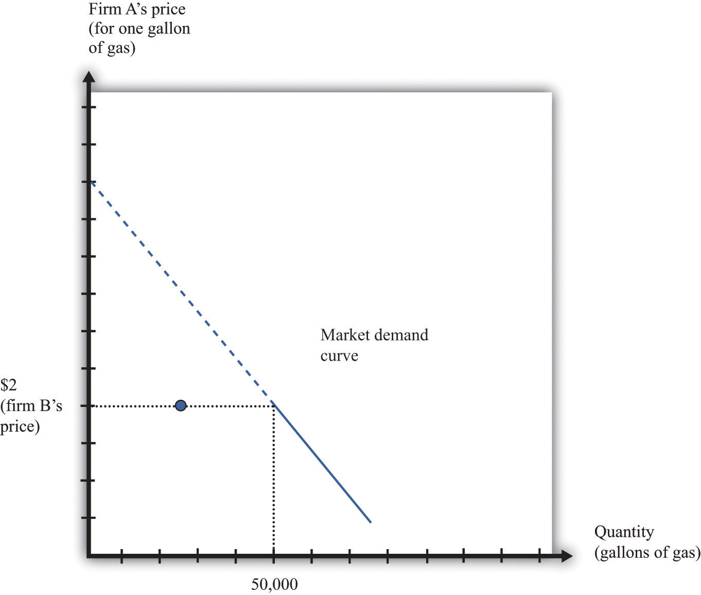
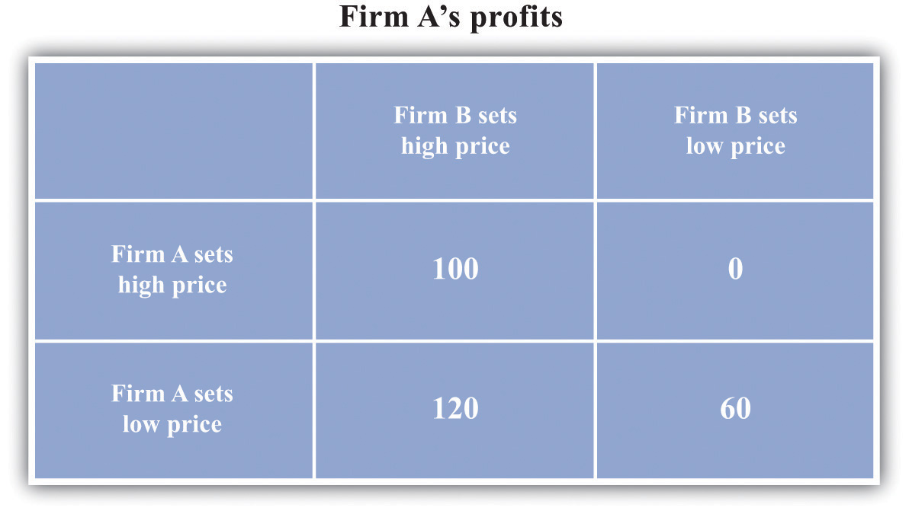
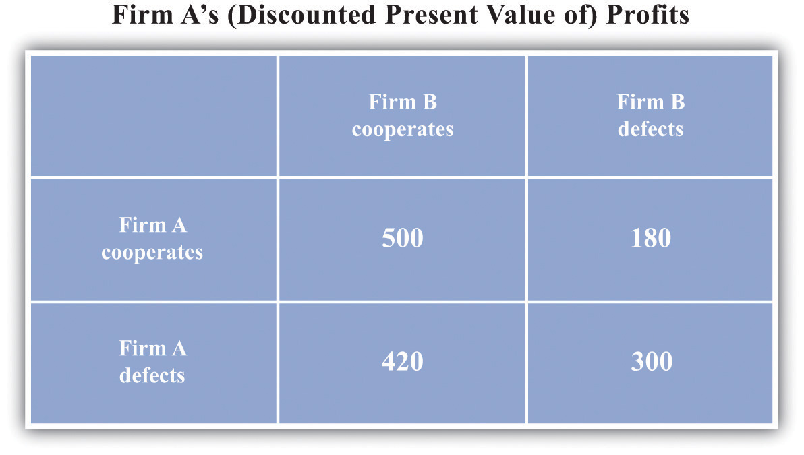
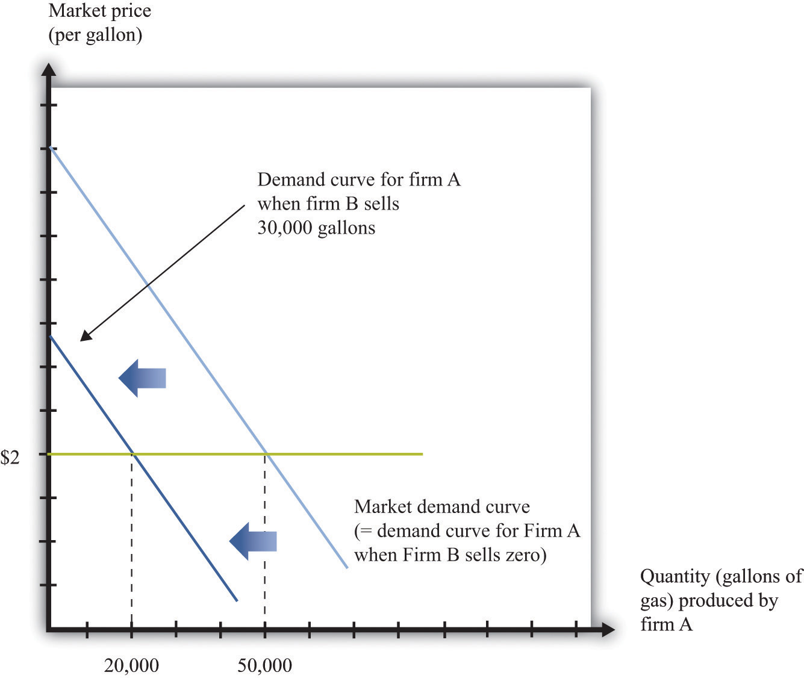
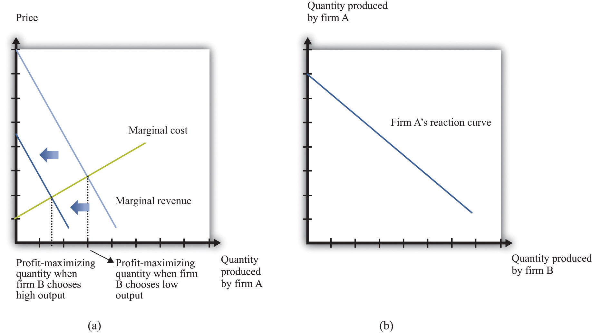
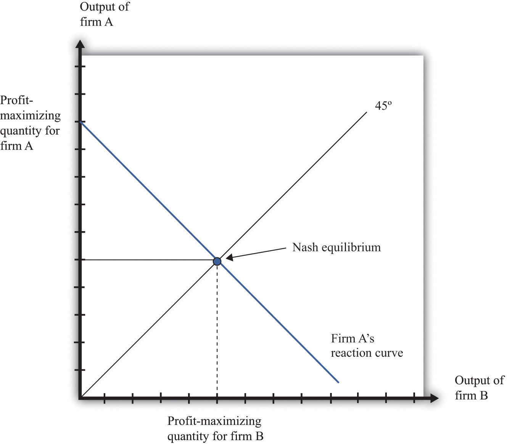
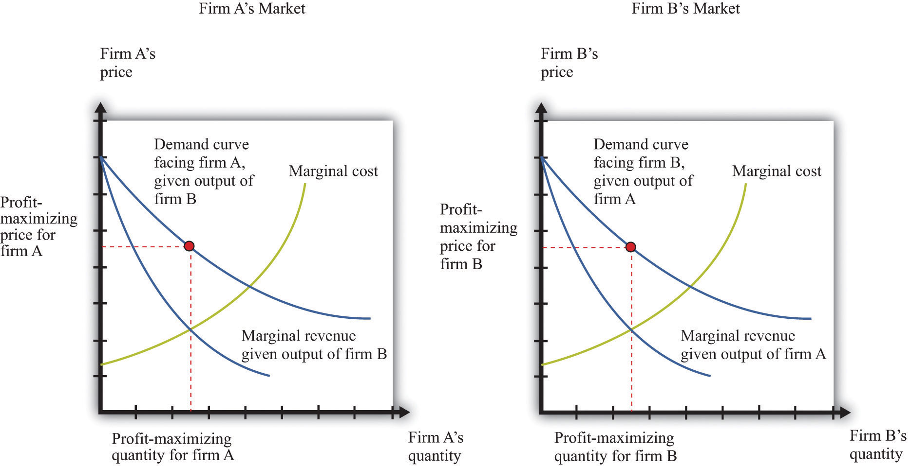

So far we have looked at monopolies: markets with a single seller. But as we pointed out earlier, the extent to which a firm is a monopolist really comes down to how we choose to define the market. The market power of all firms is limited, to a greater or lesser degree, by the presence of firms selling competing products. In this section, we examine how the presence of competitors affects the distortions due to market power.
If there are enough competitors to give us perfect competition, then there is no distortion. But what about intermediate cases, where there are a small number of sellers? The market power of Microsoft Corporation is muted by the presence of competitors producing products that are substitutes for Microsoft software. If Microsoft were to triple the price of its Windows operating system, many buyers would switch to Macintosh computers or even start running the free operating system Linux. To the extent that substitute products are available to well-informed consumers, market power is decreased.
Once firms have to start worrying about the strategies of their competitors, decision making can become surprisingly complex. Each choice that a firm makes concerning what goods and services to produce, how to produce them, how to market them, how to price them, and so on, is now complicated by the fact that all of its competitors are making similar choices. This contrasts with a competitive market, where a single firm does not need to consider the behavior of its competitors at all; it only needs to know the market price for its output.
The task of a firm with market power is to choose the point on the demand curve that maximizes its profit. From the firm’s perspective, it doesn’t matter whether it (1) sets a price and then lets the quantity demanded come from the demand curve or (2) chooses a quantity and then lets the price be whatever the market will bear. Oddly enough, though, the interaction among firms is very different in a world where firms are setting prices compared to one where they choose their level of output. As we go through this section, we shall see why.
We start by thinking about the case where firms set prices, beginning with two firms selling exactly the same product. An example is two gas stations at the same intersection, each of which has to choose what price to set for the gasoline that it sells. We first look at the choice of one of these firms and then study what happens when the two firms interact. We make a simplifying assumption, which is reasonable for gasoline retailers, that marginal cost is constant.
The first thing we need to know is the shape of the demand curve facing a firm. Let us look at the decision of one gas station (firm A). The owner of this gas station can look across the street and see the price set by its competitor (firm B) across the street. Suppose, for example, that firm B is selling gas at $2 per gallon. What does the demand curve for firm A’s gas look like?
We illustrate this demand curve in Figure 15.6 "The Demand Curve Facing a Firm, Taking as Given the Price Set by a Competitor".
Figure 15.6 The Demand Curve Facing a Firm, Taking as Given the Price Set by a Competitor
This figure shows the monthly demand curve facing firm A in a market where two gas stations are setting their price per gallon.
If firm B sets a price of $2, what should firm A do? As long as $2 is greater than the marginal cost, firm A makes the most profit if it undercuts firm B a little bit. If it sets a price of $1.99, it can capture the entire market, whereas if it sets a price of $2 it gets only half the market. But exactly the same is true of firm B. For any given price that firm A sets, firm B would do better to undercut it by a penny. Competition provides a strong incentive for firms to cut their prices.
The discussion so far tells us how one firm will respond to the price of the other, but we don’t yet know where the firms will end up. We do not yet know what the equilibrium will look like. Previously, we used the term equilibrium in the context of supply and demand, denoting the point where the supply and demand curves intersect. The idea of equilibrium goes beyond this, however: it denotes a situation of balance in which no one has any desire to change.
When we think about strategic situations with a small number of firms, we maintain the idea of an equilibrium where no one wants to change their decision. We use an idea of equilibrium invented by John Nash (a mathematician who won a Nobel Prize in Economics for this and other contributions). The concept of the Nash equilibriumA process for predicting outcomes in strategic situations. also expresses a sense of balance, but it is applied to strategic situations rather than markets. The key feature of the Nash equilibrium is that no one has any desire to change what is being done.
Toolkit: Section 31.18 "Nash Equilibrium"
The Nash equilibrium is used to predict outcomes in strategic situations, often referred to as “games.” In a game, a small number of players (such as firms) interact. Each player chooses an action, and each player receives a payoff (for example, profit). The payoff of a player depends on his chosen action and the actions chosen by all the other players. In the Nash equilibrium, two things are true:
To see the Nash equilibrium in action, go back to our gas stations. So far, we have seen that—taking firm B’s price as given—firm A will want to set a lower price. For example, if firm B sets a price of $2, firm A will set a price of $1.99. But this is not a Nash equilibrium because firm B would then like to do something different. If firm A sets a price of $1.99, firm B will want to set a price of $1.98, and so on. This process will stop only when the firms’ prices equal marginal cost. Thus we can make an educated guess: in the Nash equilibrium, each firm sets its price equal to the marginal cost of production. In this equilibrium, both firms earn no profits.
To see that this is indeed an equilibrium, we suppose firm B sets its price equal to marginal cost and then ask if firm A would like to change its price away from marginal cost. Were firm A to set its price greater than firm B, it would get no sales and no profits. This does not make firm A better off. If firm A were to set its price below marginal cost, then it would capture the entire market, but it would make a loss on each sale. It would be selling below the costs of production and thus make negative profit. This certainly does not make it better off. So firm A has no incentive to do anything different. Obviously, the same arguments apply to firm B. If both firms set the price at the marginal cost, neither can change its price and make higher profit.
The game played between two firms producing an identical product and setting prices is called Bertrand competitionA situation in which two or more firms sell an identical product and set prices. In equilibrium, they all set price equal to marginal cost.. The remarkable implication of Bertrand competition is that the predicted outcome (price) will equal marginal cost. With only two firms, in other words, we get the same outcome as with a competitive market. Even with two firms, the market can be very competitive, and there may be no need for antitrust authorities to intervene.
Households certainly like Bertrand competition because they can purchase goods at marginal cost. The firms, however, clearly do not like the outcome. Both firms understand that they would both be better off if they could only charge more for a good. If they could meet together and collude, then they would want to behave like a monopoly and share the profit between them. But charging the monopoly price is not a Nash equilibrium. If one firm were to set the monopoly price, the other would have an incentive to undercut its rival by charging a slightly lower price.
Here is another way of looking at this problem. Let us again consider a situation where two firms are choosing their prices. To keep things simple, suppose now that the firms must choose between two prices: the (high) monopoly price and the (low) competitive price. We will no longer assume constant marginal cost, so the firms still earn some profit when the price equals marginal cost. There are thus four possibilities: (1) both firms set a high price, (2) both firms set a low price, (3) firm A sets a high price and firm B sets a low price, and (4) firm A sets a low price and firm B sets a high price.
Suppose that Figure 15.7 "The Payoffs (Profits) from Different Pricing Choices" shows us the profits that firm A earns in each case. (There is a similar figure for firm B.) When both firms set high prices, firm A earns profits of $100 (think of this as monopoly profits of $200 that they share.) However, if firm B sets a high price, firm A is better off setting a low price. In this case, firm A gets profits of $120. So if firm B sets a high price, firm A does best by setting a low price. What about if firm B sets a low price? Then firm A gets nothing if it sets a high price and profits of $60 if it sets a low price. Firm A is clearly better off setting a low price in this case as well. No matter what firm B does, firm A should set a low price. The same is true for firm B, so the Nash equilibrium is for both to set a low price. If they could collude, they would both agree to set a high price and earn higher profits. But collusion is not a Nash equilibrium because both firms have an incentive to cheat. This is an example of a prisoners’ dilemmaThere is a cooperative outcome that both players would prefer to the Nash equilibrium of the game. game.
Figure 15.7 The Payoffs (Profits) from Different Pricing Choices
Firm A and firm B are each choosing to sell at either a high price or a low price. No matter what firm B chooses to do, firm A is better off setting a low price.
Is there any way that the firms might be able to change the incentives so that they can collude? Each firm would like some means of punishing the other if it cheats. If they get to set their prices only once, there is no obvious punishment. But if these firms are competing over a long period of time—as happens in the real world—then more possibilities open up.
Think again about our two gas stations. They might both agree to set a high price for their gas. Then they keep a careful eye on each other. As long as firm B keeps its prices high, firm A is content to do the same. But if firm B ever drops its prices, then firm A can punish it by retaliating. More specifically, suppose the firms adopt the following rules:
Figure 15.8 "The Payoffs (Profits) from Cooperating and Defecting" shows an example of firm A’s profits in this case. (This should now be understood as a discounted present value of profits because we are imagining the firms competing for months or years.)
Figure 15.8 The Payoffs (Profits) from Cooperating and Defecting
Defecting means setting the low price every month. Cooperating means setting the high price as long as the other firm has set the high price in all previous months but switching to the low price every month if the other firm ever sets the low price.
Will the firms have an incentive to follow these rules? Put yourself in the shoes of firm A. If firm B is charging the monopoly price, then you can make a quick profit by undercutting firm B’s price. This will generate a gain in that period. But there is a cost: in future periods, firm B will charge the competitive price, and your profit will be driven to $0. For the numbers in the table, it is better for firm A to cooperate if firm B also cooperates. Thus if two firms compete with each other over and over again, they may be able to sustain collusive high prices.
There is something else striking about Figure 15.8 "The Payoffs (Profits) from Cooperating and Defecting". It is a Nash equilibrium for both to cooperate, but it is still also a Nash equilibrium for both to defect. Look at the profits of firm A if firm B defects. Firm A earns $300 if it defects but only $180 if it cooperates. If you thought the other firm was going to renege on the agreement, then you would want to do the same thing. Economists say that this game has multiple equilibria. Expectations are critical: if each firm expects the other firm to cooperate, then they will indeed both cooperate; if each firm expects the other firm to defect, then they will indeed both defect. This is called a coordination gameThere are multiple Nash equilibria, and the players all agree on the ranking of these equilibria..
Toolkit: Section 31.18 "Nash Equilibrium"
The prisoners’ dilemma game, the coordination game, and other games are discussed in more detail in the toolkit.
One final note: we are showing how firms can (and often do) sustain high prices even in the face of competitive pressures. We are not suggesting that this is what you should do if you are ever responsible for setting prices! Conspiring to set high prices is very often a violation of antitrust laws.
Up to this point, we supposed that the two firms were producing an identical product. If we think of two firms producing goods that are close—but not perfect—substitutes, we still reach very similar conclusions. For example, suppose there are two pizza restaurants on the same street. If one restaurant undercuts the other’s price, it would no longer expect to immediately capture the entire market, but it would still expect to gain a lot of business. In this situation, the arguments that we have just made still apply. Each restaurant would have an incentive in the short run to undercut the other’s price. If they compete repeatedly, however, they may be able to sustain high prices.
Look again at Figure 15.6 "The Demand Curve Facing a Firm, Taking as Given the Price Set by a Competitor". The demand curve in that figure is based on the idea that if firm A sets its price a little below firm B’s price, firm A will capture the entire market. This presumes, though, that firm A can produce enough to supply the entire market. Suppose instead that firm A is unable to supply more than 25,000 gallons of gas per month. Now, if firm B has set a price of $2, then the best that firm A can do is to also set a price of $2. Firm A no longer sees any benefit from cutting its price because it cannot supply any more gas to the market. Similarly, think of the two pizza restaurants. If both restaurants are typically full most evenings, then neither would see a benefit from cutting its price. There is no point in trying to attract your competitors’ customers if you cannot then supply them with the goods or services that they want.
This suggests another way in which firms can keep prices high. They can deliberately limit their capacity to change their own incentives about price-setting. In effect, this is another way of “changing the game” of Figure 15.7 "The Payoffs (Profits) from Different Pricing Choices". To analyze this kind of behavior by firms, we suppose that they choose their level of output rather than the price they set.
We again consider a situation where two firms are competing in the same market. As before, the first step is to determine the demand curve facing an individual firm. Figure 15.9 "The Demand Curve Facing One Firm Shifts to the Left as the Other Firm Increases Its Output" shows our gas station example again. In contrast to our previous analysis, firm B is choosing how much to produce (that is, how much gas to sell) rather than what price to set. As firm B increases its output, the demand curve faced by firm A shifts to the left. If firm B produces nothing, firm A faces the entire market demand curve. If firm B produces (sells) 30,000 gallons, firm A’s demand curve is shifted to the left by that amount. You can see that the demand curve faced by firm A has a familiar shape, unlike the odd demand curve in Figure 15.6 "The Demand Curve Facing a Firm, Taking as Given the Price Set by a Competitor".
Figure 15.9 The Demand Curve Facing One Firm Shifts to the Left as the Other Firm Increases Its Output
As firm B produces more output, the demand curve faced by firm A shifts to the left.
When its demand curve shifts to the left, firm A’s marginal revenue curve also shifts to the left. Figure 15.10 "Firm A’s Profit-Maximizing Choice of Output as Firm B Changes Its Level of Output" shows what happens. Note that the downward-sloping curves here are now marginal revenue curves, not demand curves. We omitted the demand curves to keep the diagram from being too cluttered.
Part (a) of Figure 15.10 "Firm A’s Profit-Maximizing Choice of Output as Firm B Changes Its Level of Output" shows two marginal revenue curves for firm A associated with different levels of output for firm B. An increase in firm B’s output causes the marginal revenue curve facing firm A to shift to the left. How will firm A respond? As always, we know it will produce a level of output such that marginal revenue equals marginal cost. So as the marginal revenue curve shifts inward, firm A will produce less output. If firm B produces more output, firm A will produce less. This response of firm A to firm B is shown in part (b) of Figure 15.10 "Firm A’s Profit-Maximizing Choice of Output as Firm B Changes Its Level of Output". Here the output of firm B is on the horizontal axis, and the output of firm A is on the vertical axis. The downward sloping curve, sometimes called a reaction curveA curve that shows what happens to one player’s best strategy when the other player’s (or players’) strategy changes., shows us the output of firm A for every level of output of firm B.
Figure 15.10 Firm A’s Profit-Maximizing Choice of Output as Firm B Changes Its Level of Output
As firm B produces more output, firm A’s marginal revenue curve shifts to the left (a), and firm A responds by producing less output (b).
Toolkit: Section 31.18 "Nash Equilibrium"
A reaction curve is used to help find the equilibrium in a strategic situation. It shows what happens to one player’s best strategy when the other player’s (or players’) strategy changes.
We can now predict what will happen in this market. To simplify matters, we assume that the two firms are identical. This will make it easier to find a Nash equilibrium. In a Nash equilibrium, the following things are true.
If the two firms are identical, they will produce the same levels of output in the Nash equilibrium. Then, as shown in Figure 15.11 "Nash Equilibrium for Quantity Game", the equilibrium level of output corresponds to the intersection of the reaction curve and the 45-degree line. It is at this point, and only at this point, that all four conditions that we have listed hold. To understand this, put yourself in the position of firm A. You make a forecast about how much firm B will produce. Suppose you correctly forecast firm B’s profit-maximizing quantity. Then you will respond with your own profit-maximizing quantity. This is the point labeled as the Nash equilibrium in the figure. But why should you predict that quantity for firm B? That quantity is in fact its profit-maximizing choice, given what you are doing. The beliefs that each firm has about the other’s actions are consistent, and indeed they are self-enforcing.
Figure 15.11 Nash Equilibrium for Quantity Game
The Nash equilibrium when both firms are identical occurs at the level of output where the reaction curve crosses the 45-degree line.
Now that we know how firms choose capacity (quantity), how are prices determined? The answer is easy: prices come from the demand curve. If the two firms are producing identical products, the price comes from the market demand curve, given the total output of the two firms. This is similar to what we did in the monopoly case: given the output level, we turned to the demand curve to find the price. If the two firms are producing products that are not perfect substitutes, then the analysis is similar. However, there is not one demand curve in this case; there are two. Each firm faces a demand curve that depends on the output of the other firm, as shown in Figure 15.12 "The Markets for Both Firms".
Figure 15.12 The Markets for Both Firms
Firm A correctly predicts firm B’s profit-maximizing level of output, and firm B correctly predicts firm A’s profit-maximizing level of output.
When firms are choosing the price to set, it is possible for competition between two firms to drive prices all the way down to marginal cost and eliminate all monopoly inefficiency. This is what we see with Bertrand competition. When firms choose quantity rather than price, the effects of competition are much weaker. Look again at Figure 15.12 "The Markets for Both Firms". You can see that both firms are setting price in excess of marginal cost: there is still a distortion due to market power.
Competition between the firms does matter, however. Increases in firm B’s output, for example, shift firm A’s demand curve to the left. As a consequence, firm A ends up choosing a lower price than it would otherwise. Competition from firm B helps keep firm A’s prices low. By similar reasoning, competition from firm A helps keep firm B’s prices low.
In an ideal world (from their point of view), these firms would both limit their output further to get closer to the monopoly outcome. Exactly the same kind of strategies that we discussed earlier could come into play: firms that compete repeatedly over a long period of time might tacitly agree to reduce output further, punishing any defection by increasing output and cutting prices.
In the United States, there are two aspects of policy when there are a small number of firms. First, a small number of firms in a market may be able to collude to set high prices. Antitrust laws can be used to punish such collusive behavior. Second, if there are a small number of firms, they may want to merge and become one large firm. Such mergers must be approved by the US government.
The Sherman Antitrust Act is not only used against existing monopolies but is also more generally applied to groups of firms that act to jointly monopolize a market. If multiple firms act collusively to exert market power, they may fall foul of the act. Indeed, in the Standard Oil case, the key issue was the way the Standard Oil Trust brought multiple firms together into a single decision-making unit.
One form of collusive behavior occurs when firms come together to jointly decide on output levels and/or the price of the goods and services they sell. Occasionally, managers of firms are foolish enough to get caught on record making such proposals. In a famous incident a couple of decades ago, the CEO of American Airlines, Robert Crandall, proposed a 20 percent price increase to his counterpart at Braniff Airlines. Unfortunately for Crandall, the conversation was taped. (Interestingly, Crandall was not actually guilty of a violation of the Sherman Antitrust Act because no actual price-fixing took place.) More often, such agreements are likely to be tacit. One firm may try raising its prices, to see if others will follow. It can be very hard for the antitrust authorities to determine if price-fixing is actually occurring.
Other countries also have laws and agencies that seek to prevent collusion by firms. For example, in April 2008, the Office of Fair Trading in Britain charged two tobacco companies of colluding with supermarkets to set high prices for cigarettes. Specifically, the Office of Fair Trading said that the companies had set up arrangements “linking the retail price of a manufacturer’s brand to the retail price of a competing brand of another manufacturer.”Quoted in G. Wearden, “OFT Accuses Tobacco Firms and Retailers of Cigarette Price Fixing,” Guardian, April 25, 2008, accessed January 31, 2011, http://www.guardian.co.uk/business/2008/apr/25/regulators.retail.
Another form of collusive behavior occurs under the heading of “bid rigging.” Suppose only a few dairies provide milk to all schools in a region of the country. The schools set up auctions to decide which dairies will supply milk to different school districts. There is one auction for each district, and several dairies compete to provide milk to the different districts. The situation seems at first glance to be very competitive. We might expect the dairies to compete with each other in all the auctions, with this competition driving down milk prices for the schools. But imagine instead that the dairies agree ahead of time to divide up the districts. So for example, if there are three districts and three dairies, the dairies might agree that dairy 1 would win the auction in one district, dairy 2 in another, and dairy 3 in the third. They do this by each putting in very high bids (meaning they would charge a lot for a service), in the districts where they do not want to win the auction, allowing one dairy to win the auction and still charge a high price. Exactly such a scheme occurred in Texas, and an individual was charged with a felony.
Suppose you heard that Apple Computer and Microsoft Corporation were proposing a merger. You can perhaps imagine Steve Jobs and Bill Gates telling us how much we as consumers would benefit from this merger. They would say that Apple and Microsoft could combine the best features of their operating systems. The two companies could avoid costly duplication of research, so they would be able to provide goods more cheaply. They would no longer need to spend so much on advertising, again providing savings that could be passed onto the consumer, and so on. In a nutshell, Jobs and Gates might claim, the merger would bring new exciting products with lower costs of distribution and marketing.
You can be sure, however, that the Department of Justice, European antitrust authorities, and other similar bodies throughout the world would look on a proposed Microsoft-Apple merger with a highly skeptical eye. They would carry out their own studies of the costs and benefits of the merger. Even if the merger were to bring all the advertised benefits, it would also make the computer operating system market much less competitive. If there are originally two firms in a market and they then merge, they become a monopoly. The analysis in this chapter allows us to predict that output would decrease and prices would increase. Because a market with only two firms may still be very competitive, the loss in buyer surplus going from a competitive market to a monopoly can be sizable.
Stemming from the Clayton Act, the Department of Justice and the Federal Trade Commission must approve mergers and acquisitions of larger companies. The guidelines used for those decisionsUS Department of Justice, “Horizontal Merger Guidelines,” accessed March 14, 2011, http://www.usdoj.gov/atr/public/guidelines/hmg.htm. emphasize two general points: (1) the effect of the merger on efficiency and (2) the effect of the merger on market power. Efficiency here refers to cost efficiency—the extent to which a merged company will be able to reduce its costs of production. The Department of Justice puts it as follows in its merger guidelines: “Efficiencies generated through merger can enhance the merged firm’s ability and incentive to compete, which may result in lower prices, improved quality, enhanced service, or new products.”US Department of Justice and Federal Trade Commission, Revised Section 4 Horizontal Merger Guidelines, April 8, 1997, accessed March 1, 2011, http://www.ftc.gov/bc/docs/horizmer.shtm.
Efficiency may also relate to the quality of the good being produced. If a merger enables a better product to be produced at the same price as before, then the merger increases market efficiency. Put differently, if the merger increases the surplus of buyers, either because the product is improved or because the reduced costs of production lead to a lower price, then the merger has had a positive impact on efficiency. For example, one benefit from airline mergers might be the more efficient use of the information systems that handle travel reservations. Another might be more efficient use of airport landing rights.
With these guidelines in mind, how would the Department of Justice respond to a proposed merger of Microsoft and Apple? They would study the proposed merger with the goal of determining if the merger would create a more efficient market or if it would increase the market power of the sellers. Department of Justice economists would use frameworks like the ones we have presented in this chapter to help them predict the outcome of the merger.
The Department of Justice would almost certainly decide not to approve an Apple-Microsoft merger. However, it does not block most proposed mergers. There is debate among economists about whether the antitrust authorities are too lenient or too stringent. A recent study by economists Orley Ashenfelter and Daniel Hosken looked at five mergers that they suspected of being anticompetitive.Orley Ashenfelter and Daniel Hosken, “The Effect of Mergers on Consumer Prices: Evidence from Five Selected Case Studies” (National Bureau of Economic Research Working Paper 13859), February 2008. They compared prices of the goods produced by the merged firms with prices of goods that were not close substitutes yet had similar costs. They concluded that, in four of the five cases, prices increased between 3 percent and 7 percent, and “given the large amount of commerce in these industries, the implied transfer from consumers to manufacturers is substantial.” The evidence from this study thus suggests that the antitrust authorities are too permissive in allowing mergers.
The European Union also watches mergers closely, likewise balancing cost-efficiency and competitiveness considerations. Here is a statement of its policy on mergers: “If the annual turnover of the combined businesses exceeds specified thresholds in terms of global and European sales, the proposed merger must be notified to the European Commission.…These rules apply to all mergers no matter where in the world the merging companies have their registered office, headquarters, activities or production facilities. This is so because even mergers between companies based outside the European Union may affect markets in the EU.”See European Commission, “Mergers: Overview,” accessed March 14, 2011, http://ec.europa.eu/comm/competition/mergers/overview_en.html.